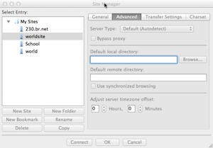
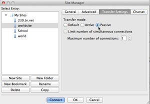

FilaZilla Configuration
Introduction
This document outlines the basic steps for configuring Filezilla FTP client to work with a site hosted on Bluehost, Hostmonster or Justhost, other domains may be the same, while others are different, check with your provider is these steps do not work. Directions are provided to both a main domain and to a subdomain. If you are using a different provider, consult your host provider's site for help if needed. A video demonstrating this process is also available at the bottom of this document.
Prerequisites
This document assumes that you already have:
- Downloaded and installed the Filezilla client.
- Created a local folder where all website resources are or will be stored (this will typically be the htdocs folder in XAMPP.
- Purchased a hosting account with a hosting provider and have the domain name, FTP username and password to the hosting account. Most providers will send you an email with the username and account information for your site. Consult your email or ask the hosting provider if you have any questions.
Filezilla connection to the main domain
- Launch Filezilla
- Click the "Open the Site Manager" button (top left corner, looks like a computer)

- Click the "New Site" button, a New Site is created in the Select siteEntry area

- Give the site a name - your domain name is suggested
- In the General area (on the right)
- Type your domain name (e.g. mydomain.com) in the host text box on the right
- Leave the Protocol setting
- Change the Encryption to "Only use plain FTP (insecure)
- Change the Logon Type to "Normal"
- Type your FTP username in the User text box
- Type your password in the Password text box
- Move to the "Advanced" category by clicking on Advanced
- Click the "Browse" button next to the "Default local directory" text box
- Navigate to the folder that will hold your website — this should be on your laptop's hard drive or a portable storage device.
- If the folder doesn't exist, create it — your domain name is suggested as the name for the folder
- Enter "/public_html" into the Default remote directory text box
- Turn on the checkbox for "Use synchronized browsing"
- Move to the "Transfer Settings" tab.
- Click the "Passive" radio button in the "Transfer Mode" group.
- Click the "Connect" button — if everything is correct it should connect to your local directory and the remote host.
Your FTP connection from your local working directory to the remote publishing directory should now be setup. With synchronized browsing enabled when you navigate through your local directory it should also move to the corresponding directory on the remote host.
Setting up a Subdomain on your host
You only need to follow these directions if you are using a sub-domain.
Note: A subdomain is treated as if it is a stand alone web site, independent of the main domain site. It is not intended to share resources with the main domain. This means that on your local machine the subdomain web site should have its own folder to hold all materials. This folder should be completely independent of the folder which contains the materials used in the main domain web site. Subdomains however do not require a separate domain name, they simple append the subdomin name to the main domain name. For example, if my main domain is mydomain.com, and I create a subdomain named "sandbox", then the URL for the subdomain is sandbox.mydomain.com.
The process for creating a subdomin for the three previously mentioned host providers is the same. If you are using a different host, your process may be different.
Creating a subdomain in your hosting account
- Log in to your hosting account and go to the C-Panel, then scroll down to the area entitled "Domains". In the tools list there is a tool labeled "Subdomains". Click it.
- Enter the name of the subdomain (e.g. sandbox) in the first text box.
- The C-Panel tool will automatically show the path to the new subdomain in the Document Root text box.
- Unless there is an overwhelming reason not to, accept the default location provided.
- Click "Create".
- Log out when done.
- The setup process typically occurs immediately, but may take 1-2 hours depending on the host provider.
Filezilla connection to a subdomain
To create a Filezilla FTP connection that points specifically to the subdomain do the following:
- Launch Filezilla
- Click the "Open the Site Manager" button (top left corner, looks like a computer)
- Click the "New Site" button, a New Site is created in the Select Entry area
- Give the site a name - your subdomain name appended to the main domain name is suggested (e.g. sandbox.mydomain.com)
- In the General area (on the right)
- Type your main domain name (e.g. mydomain.com) in the host text box on the right
- Leave the protocol in the default setting
- Change the Encryption to "Only use plain FTP (insecure)
- Change the Logon Type to "Normal"
- Type your FTP username in the User text box
- Type your password in the Password text box
- Move to the "Advanced" category by clicking on Advanced
- Click the "Browse" button next to the "Default local directory" text box
- Navigate to the folder that will hold your new subdomain website. Remember that this folder should be outside of and independent from the folder that contains the main domain web site. This folder should be on your laptop's hard drive or a portable storage device.
- If the folder doesn't exist, create it — your subdomain name is suggested as the name for the folder
- Enter "/public_html/" followed by the name of the subdomain folder in the Default remote directory text box (e.g. /public_html/sandbox)
- Turn on the checkbox for "Use synchronized browsing"
- Move to the "Transfer Settings" tab.
- Click the "Passive" radio button in the "Transfer Mode" group.
- Click the "Connect" button — if everything is correct it should connect to your local directory and the remote host.
Your Filezilla connections should now be setup and the folder that will store your local files to be used in the web site should now show in the "Local site" panel (on the left) and the remote web site should show in the Remote site panel (on the right) within Filezilla when the site is connected. If any previously established files or folders exist in the local folder they should also be visible on the left. You should not see anything related to the main domain.